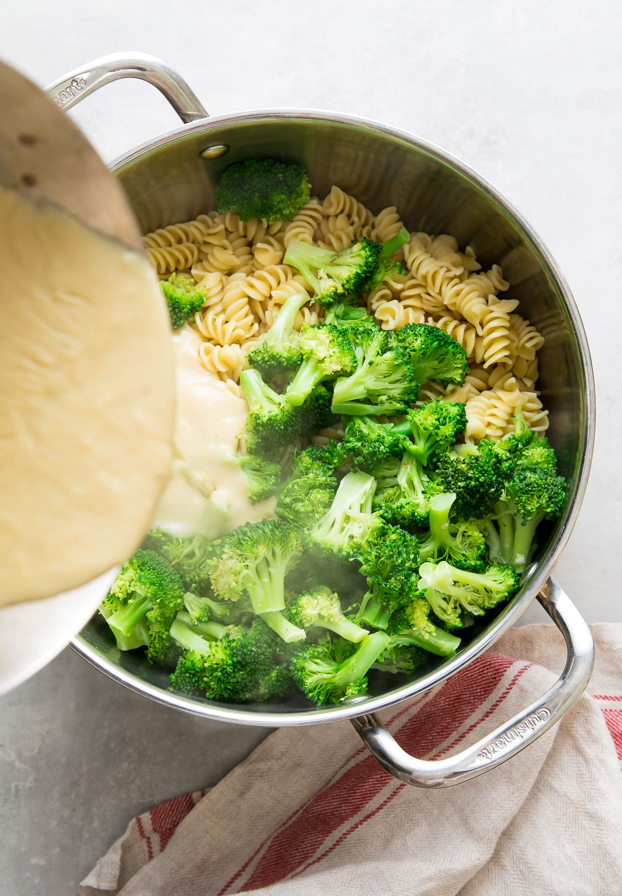

Return to Home Page
Return to Home Page
Creamy Broccoli Vegan Pasta

Description:
CCreamy Broccoli Pasta is a pantry friendly recipe featuring a non-dairy cream sauce tossed with pasta and tender broccoli for a quick and easy vegan main dish ready in 30 minutes!
Ingredients
- Pasta
- Brocolli
- Flour
- Nutritional Yeast
- Plant milk
- Garlic Powder
- Olive Oil
- Salt+pepper
- Onion Powder
Steps
- Cook the pasta + broccoli. I like to cook my broccoli with the pasta. Just be sure you’ve added enough water to the pot if you do this. To do this I suggest adding the broccoli to the cooking pasta 3 minutes before pasta is done. Broccoli is at its best when it turns its brightest green. Set aside.
- Make the creamy base. You’ll create your creamy sauce by making a roux with flour, oil and non-dairy milk. The roux takes about 8 – 10 minutes to cook so you can start this while the water for the pasta is coming to a boil. Once done, cover and set aside.
- Assemble. Add your cream base to the pasta and broccoli, mix and serve. Season with salt + pepper.